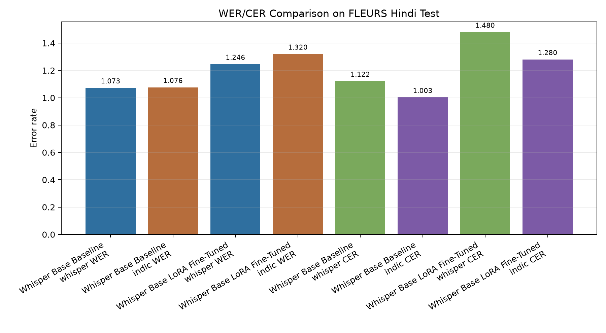
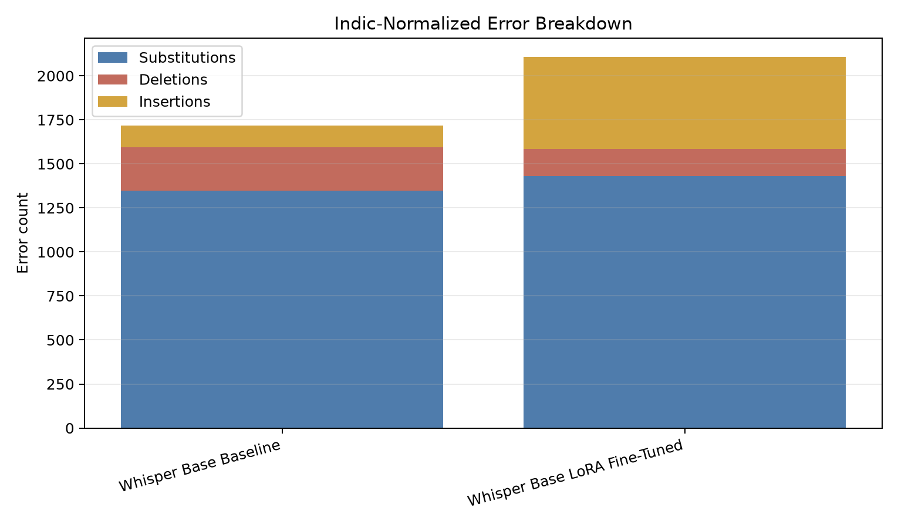
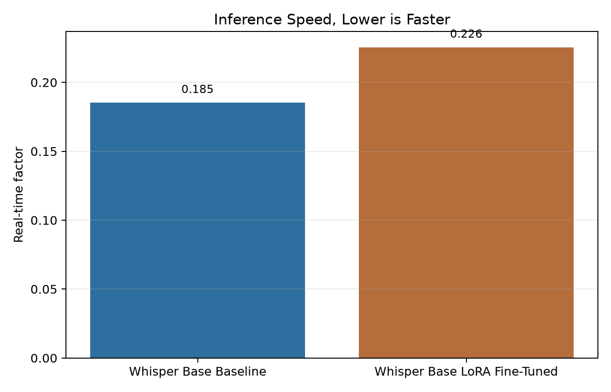

| system | dataset | split | normalization | samples | audio_minutes | rtf | wer | cer | substitutions | deletions | insertions | checkpoint |
|---|---|---|---|---|---|---|---|---|---|---|---|---|
| Whisper Base Baseline | FLEURS Hindi | test | whisper | 64 | 12.46 | 0.185 | 1.0729 | 1.1221 | 1538 | 837 | 185 | openai/whisper-base |
| Whisper Base Baseline | FLEURS Hindi | test | indic | 64 | 12.46 | 0.185 | 1.0764 | 1.0030 | 1349 | 244 | 125 | openai/whisper-base |
| Whisper Base LoRA Fine-Tuned | FLEURS Hindi | test | whisper | 64 | 12.46 | 0.226 | 1.2460 | 1.4802 | 1640 | 706 | 627 | outputs/checkpoints/whisper-base-hi-gpu |
| Whisper Base LoRA Fine-Tuned | FLEURS Hindi | test | indic | 64 | 12.46 | 0.226 | 1.3202 | 1.2805 | 1431 | 154 | 522 | outputs/checkpoints/whisper-base-hi-gpu |


